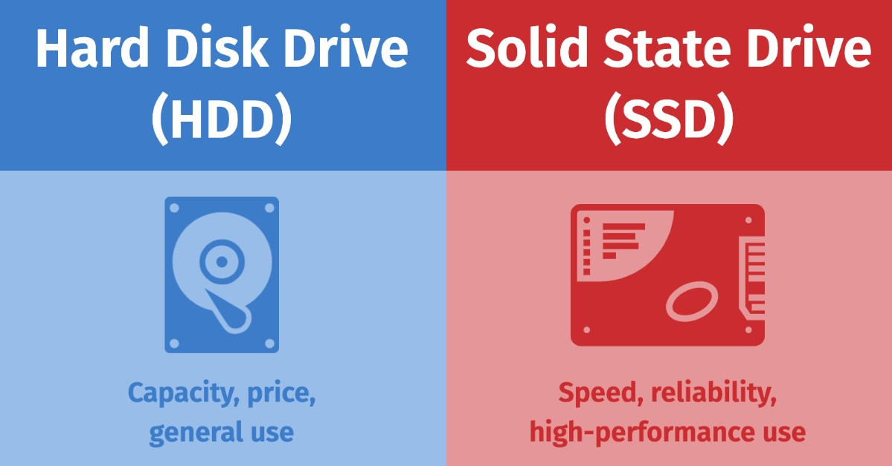

Task One
What factors would need to be considered in determining whether this new system will be critical to the business and what the impact might be if it fails?
| Category | Description |
|---|---|
| Good Impact | A new system could be critical to your business if it significantly improves efficiency, profitability, or provides a competitive advantage. Consider the following factors: |
| Bad Side | The potential negative impact if the system fails could be significant, depending on the system's importance. Here are some factors to consider: |
| What We Need to Know | Need to gather a significant amount of information to properly evaluate the potential impact of the new system: |
| We Need a Good System | In order for the system to be beneficial and worth the potential risks, it needs to be a good system. This means: |
In conclusion, a proper assessment and analysis should be conducted before implementing the system to understand how it will affect a business. The business should also have a contingency plan in place to deal with any potential failures or issues.
SERVICES
What we offer
CONTRIBUTE TO ORGANIZATIONAL PRIVACY AND CONTINGENCY PLANS
What we have created

Contingency Planning

Privacy Policies

Incident Response Plans
What our customers say


Task Seven
RAID recommendation as a method of preventing hardware failure for the 4phones e-commerce project on the following topics:
Password Protection
It is very important for anyone password setup
Protection

User

Programmer

Hardware with Backup
All software loaded on the network should have first been checked for virus contamination. This also applies to shrink-wrapped (brand new) software. The virus checking program selected should be regularly updated to protect against new viruses. Below the table is my inverstgation
| Storage Type | Capacity | Speed (read/write) | Price |
|---|---|---|---|
| HDD | 1TB | ... | $59 |
| HDD | 2TB | ... | $59 |
| HDD | 4TB | ... | $59 |
| HDD | 8TB | ... | $59 |
| SSD | 1TB | ... | $159 |
| SSD | 2TB | ... | $359 |
| Online Server | 10TB | Internet Speed | $100 Per Year |

CONTACT
Contact us and we'll get back to you within 24 hours.
Sydney, AU
+61 450513411
danielpratama18@gmail.com